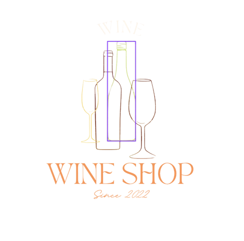
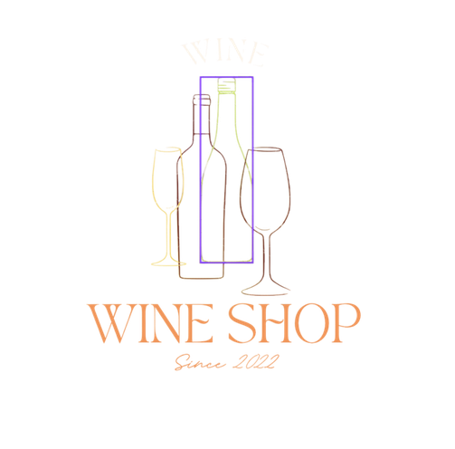
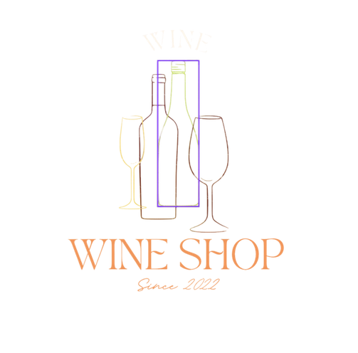

Advantages and Target Market
*Anti-Inflammatory
*Anti-Oxidant
*Reduce heart disease
*Lowering bad Cholesterol Levels
Back 

Feasibility Study of Ampalaya Wine as essential Medicine for Reducing risk of Heart Disease
Feasibility Study of making Edible Straw and Cup using gelatin as Bio-plastic solution
Feasibility Study of Rice Grain with Alternative Filter as a Steep Coffee
This invention lies in the field of food products. This study relates to an edible straw and cup. The straw and cup is entirely edible, maintains its shape for an extended period of time, and provides nutritional benefits as a breakfast and/or snack food. The straw is primarily for children yet adults will enjoy the novelty as well. The straw contributes significant amounts of complex carbohydrates, protein, beneficial fats, fiber, phytonutrients, vitamins, and minerals to the consumer.
Rice coffee is a coffee substitute made from roasted rice. It is a common drink in Japan and in Asian countries. The drink is made from roasted brown rice, water, and a sweetener. The drink is believed to have multiple health benefits, such as lowering blood pressure and preventing heart disease. People who use rice coffee reported having a more balanced diet, losing weight, and generally feeling healthier.
*Anti-Inflammatory
*Anti-Oxidant
*Reduce heart disease
*Lowering bad Cholesterol Levels
Back

*Good for Environment
*They can be eaten
*Have different flavors
*Reduce Littering
Back
*Caffein-Free
*Boost Immune-System
*Help Weight loss effort
*Better sleep quality
BackTo properly market our products, we will promote and advertise our product through this web page and to other Social media platform. We'll make sure that our contact or telephone number and social media accounts are linked to this web page for them to have a convenient way to place an order and ship them out through our local courier services.